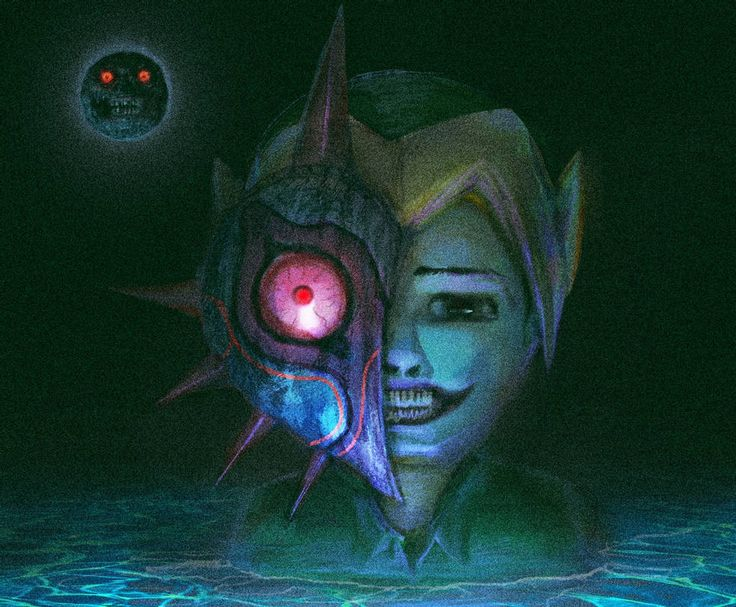
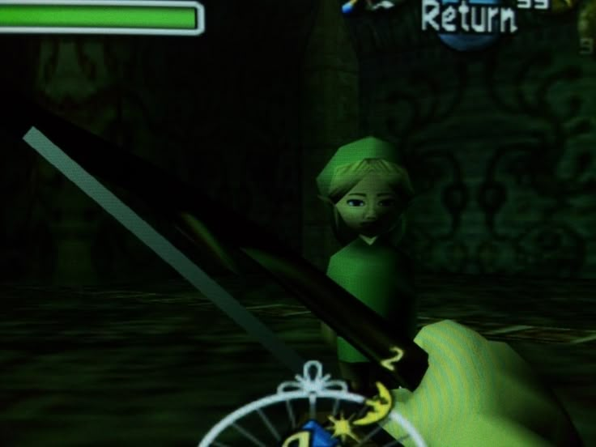
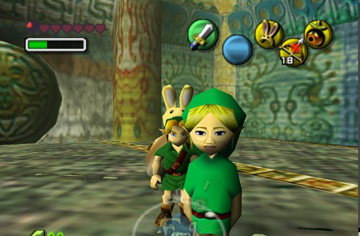
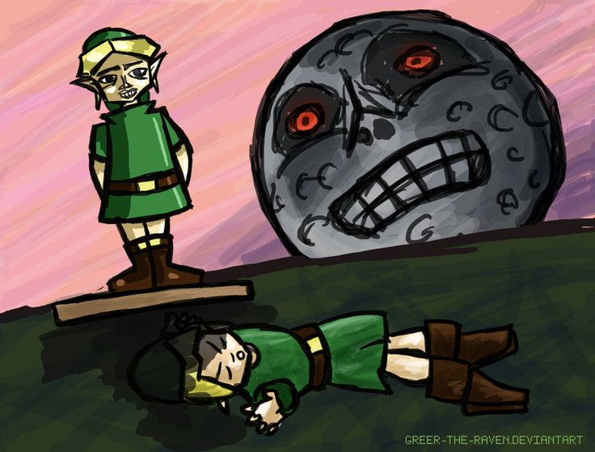

CREEPYPASTA
BEN
DROWNED
Ben Drowned é uma creepypasta de terror que ficou conhecida em 2010, por meio de uma série de relatos publicados na internet. A história acompanha um jogador que compra uma cópia usada do jogo The Legend of Zelda: Majora's Mask e começa a perceber acontecimentos estranhos durante suas partidas.
O jogo apresenta mensagens inexplicáveis, personagens agindo de maneira perturbadora e situações que parecem desafiar a lógica. Aos poucos, o protagonista passa a acreditar que existe algo sobrenatural ligado ao cartucho.

O QUE ACONTECE?
Segundo a história, o jogador recebe um cartucho que teria pertencido a um garoto chamado Ben, supostamente falecido por afogamento. Depois de começar a jogar, ele encontra eventos incomuns, mensagens misteriosas e comportamentos estranhos dentro do jogo.
Entre os momentos mais conhecidos estão a estátua de Link que parece perseguir o jogador, falhas inexplicáveis e a frase “You shouldn't have done that” (“Você não deveria ter feito isso”).
Conforme os acontecimentos se intensificam, o protagonista começa a questionar se está apenas enfrentando uma sequência de falhas no jogo ou se alguma presença está tentando se comunicar com ele.

CARACTERÍSTICAS
play_arrow ORIGEM
Série de histórias publicada na internet em 2010.
person PRINCIPAL PERSONAGEM
Ben, o garoto associado ao cartucho misterioso.
skull APARÊNCIA
A representação mais conhecida apresenta uma versão perturbadora de Link, com olhos brilhantes, lágrimas escuras e expressões assustadoras.
warning LOCAL
O universo de The Legend of Zelda: Majora's Mask, especialmente suas versões distorcidas dentro da narrativa.

CURIOSIDADES
- A creepypasta ficou conhecida pelo formato de relato em primeira pessoa, apresentado como se fosse uma experiência real.
- A história utiliza elementos do jogo original, como a estátua de Link e a atmosfera sombria de Termina.
- Ben Drowned ajudou a popularizar narrativas de terror envolvendo videogames supostamente amaldiçoados.
- Apesar de ser apresentada como um relato misterioso, a história é uma obra de ficção criada para provocar medo e suspense.
